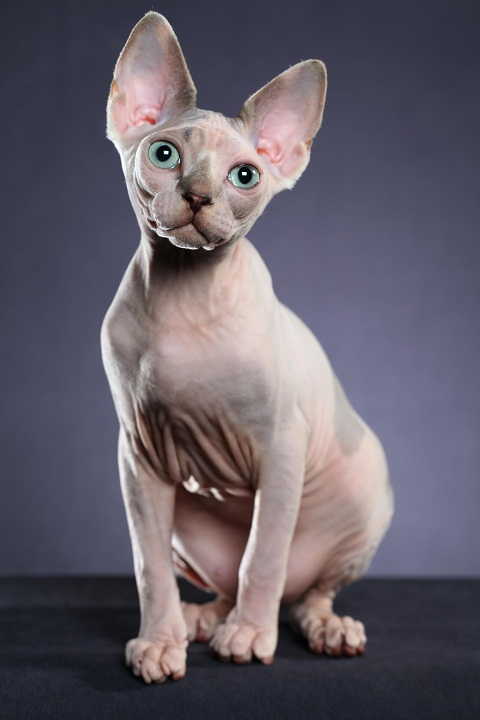

Породы кошек(стр. 2)
Ориентальная кошка (ориентал). Предки этой короткошерстной породы из Таиланда, но официально она зародилась в США.
Канадский сфинкс – порода бесшерстных кошек, история которой официально началась в 1966 году в Канаде, но есть сведения, что эти необычные создания были известны еще во времена египетских фараонов и были распространены в храмах ацтеков и инков в древней Мексике.
Абиссинская кошка - одна из древнейших пород кошек. Абиссиния - прежнее название Эфиопии, откуда происходит эта порода.
Шотландская вислоухая (или скоттиш-фолд) - очень интересная порода кошек, главная отличительная черта которой представлена в характерном строении ушных раковин, загнутых вперед и вниз.
Американская короткошёрстная кошка. Предки этой породы были привезены первыми переселенцами из Европы в Северную Америку.
Британская короткошёрстная кошка. Эта порода является самой популярной в Великобритании.
Рэгдолл - порода полудлинношёрстных кошек. Название породы переводится как "тряпичная кукла", т.к. рэгдоллы флегматично принимают любые действия по отношению к ним: их можно гладить, тискать, укладывать в определенные позы.
Мейн-кун – крупная порода домашних кошек, предки которой проживали на фермах штата Мэн (Северо-Восточная Америка).
Персидская кошка. Предки современной породы были вывезены из Персии (современное название - Иран) в Италию в 17 веке.

Экзотическая кошка (кот экзот) - порода короткошерстных кошек, искусственно созданная американскими селекционерами в 1960-х годах путем скрещивания американских короткошерстных кошек с персидскими